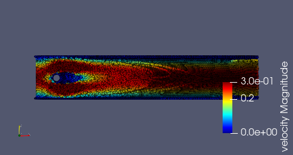

Flow around cylinder
A simulation of flow around cylinder. All parameters of this benchmark can be found here.
module cylinder
using Printf
using SmoothedParticles
const folder_name = "results/cylinder"Declare constants
#geometry parameters
const dr = 3.9e-3 #average particle distance (decrease to make finer simulation)
const h = 2.5*dr #size of kernel support
const chan_l = 0.8 #2.2 #length of the channel
const chan_w = 0.41 #width of the channel
const cyl1 = dr*round(0.2/dr) #x coordinate of the cylinder
const cyl2 = dr*round(0.2/dr) #y coordinate of the cylinder
const cyl_r = 0.05 #radius of the cylinder
const wall_w = 2.5*dr #width of the wall
const inflow_l = 3.0*dr #width of inflow layer
#physical parameters
const U_max = 1.0 #maximum inflow velocity
const rho0 = 1.0 #referential fluid density
const m = rho0*dr^2 #particle mass
const c = 40.0*U_max #numerical speed of sound
const mu = 1.0e-3 #dynamic viscosity of water
const nu = 1.0e-3 #pressure stabilization
const P0 = 1.2 #anti-clump term
#temporal parameters
const dt = 0.2*h/c #time step
const dt_frame = 0.02 #how often data is saved
const t_end = 5.0 #end of simulation
const t_acc = 0.5 #time to accelerate to full speed
#particle types
const FLUID = 0.
const WALL = 1.
const INFLOW = 2.
const OBSTACLE = 3.Declare variables to be stored in a Particle
mutable struct Particle <: AbstractParticle
x::RealVector #position
v::RealVector #velocity
a::RealVector #acceleration
rho::Float64 #density
Drho::Float64 #rate of density
P::Float64 #pressure
type::Float64 #particle type
Particle(x,type) = begin
return new(x, VEC0, VEC0, rho0, 0., 0., type)
end
end
function make_system()
domain = Rectangle(-inflow_l, -10*wall_w, chan_l, chan_w + 10*wall_w)
sys = ParticleSystem(Particle, domain, h)
grid = Grid(dr, :square)
#define geometry
obstacle = Circle(cyl1, cyl2, cyl_r)
pipe = Rectangle(-inflow_l, 0., chan_l, chan_w)
wall = BoundaryLayer(pipe, grid, wall_w)
wall = Specification(wall, x -> (-inflow_l <= x[1] <= chan_l))
inflow = Specification(pipe - obstacle, x -> x[1] < 0.0)
fluid = Specification(pipe - obstacle, x -> x[1] >= 0.0)
#generate particles
generate_particles!(sys, grid, fluid, x -> Particle(x, FLUID))
generate_particles!(sys, grid, inflow, x -> Particle(x, INFLOW))
generate_particles!(sys, grid, wall, x -> Particle(x, WALL))
generate_particles!(sys, grid, obstacle, x -> Particle(x, OBSTACLE))
return sys
end
#Inflow function
function set_inflow_speed!(p::Particle, t::Float64)
if p.type == INFLOW
s = min(1.0, t/t_acc)
v1 = 4.0*s*U_max*p.x[2]*(chan_w - p.x[2])/chan_w^2
p.v = v1*VECX
end
end
#Define interactions between particles
@inbounds function balance_of_mass!(p::Particle, q::Particle, r::Float64)
ker = m*rDwendland2(h,r)
p.Drho += ker*(dot(p.x-q.x, p.v-q.v) + 2*nu*(p.rho-q.rho))
end
function find_pressure!(p::Particle)
p.rho += p.Drho*dt
p.Drho = 0.0
p.P = rho0*c^2*((p.rho/rho0)^7 - 1.0)/7
end
@inbounds function internal_force!(p::Particle, q::Particle, r::Float64)
ker = m*rDwendland2(h,r)
p.a += -ker*(p.P/rho^2 + q.P/rho^2)*(p.x - q.x)
p.a += +2*ker*mu/rho0^2*(p.v - q.v)
ker = m*rDwendland2(h/2,r)
p.a += -2*ker*P0/rho0^2*(p.x - q.x)
end
function move!(p::Particle)
p.a = VEC0
if p.type == FLUID || p.type == INFLOW
p.x += dt*p.v
end
end
function accelerate!(p::Particle)
if p.type == FLUID
p.v += 0.5*dt*p.a
end
end
function add_new_particles!(sys::ParticleSystem)
new_particles = Particle[]
for p in sys.particles
if p.type == INFLOW && p.x[1] >= 0
p.type = FLUID
x = p.x - inflow_l*VECX
push!(new_particles, Particle(x, INFLOW))
end
end
append!(sys.particles, new_particles)
end
function calculate_force(sys::ParticleSystem)::RealVector
F = VEC0
for p in sys.particles
if p.type == OBSTACLE
F += m*p.a
end
end
C = 2.0*F/((2.0*U_max/3.0)^2*(2.0*cyl_r))
return C
end
function main()
sys = make_system()
out = new_pvd_file(folder_name)
C_D = Float64[]
C_L = Float64[]
#a modified Verlet scheme
for k = 0 : Int64(round(t_end/dt))
t = k*dt
apply!(sys, move!)
add_new_particles!(sys)
for p in sys.particles
set_inflow_speed!(p,t)
end
create_cell_list!(sys)
apply!(sys, balance_of_mass!)
apply!(sys, find_pressure!)
apply!(sys, internal_force!)
apply!(sys, accelerate!)
#save data at selected frames
if (k % Int64(round(dt_frame/dt)) == 0)
@show t
C = calculate_force(sys)
push!(C_D, C[1])
push!(C_L, C[2])
save_frame!(out, sys, :v, :P, :type)
end
apply!(sys, accelerate!)
end
save_pvd_file(out)
println()
C_SPH = RealVector(sum(C_D[end-9:end]/10), sum(C_L[end-9:end]/10), 0.)
C_exact = RealVector(5.57953523384, 0.010618948146, 0.)
relative_error = norm(C_SPH - C_exact)/norm(C_exact)
@show C_SPH
@show C_exact
println("relative error = ",100*relative_error,"%")
end
endThis page was generated using Literate.jl.